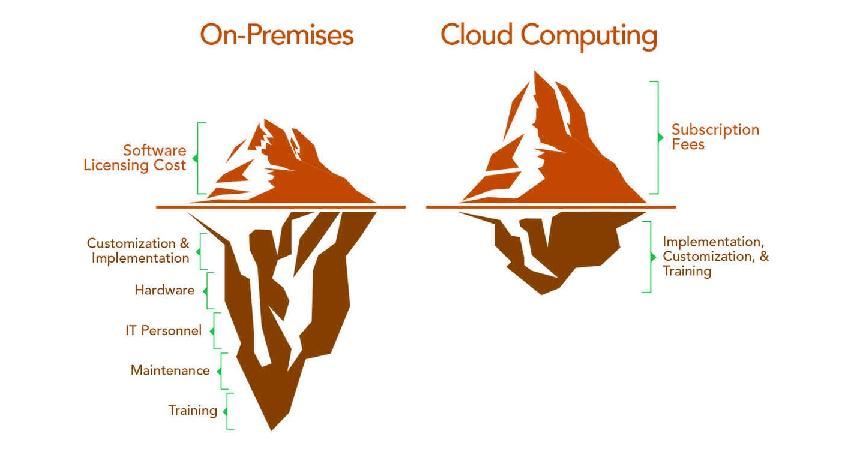

Cloud computing.
Cloud computing ou Computação nas nuvens é uma tecnologia que ajuda empresas
que não querem investir em equipamentos para data center físico.
Hoje existem várias empresas que oferecem serviços de computação nas nuvens
como Azure da Microsoft, AWS da Amazon, Openshift da Red Hat, entre outras.
Com a facilidade e velocidade do tráfego de dados, hoje, sem dúvida é mais
vantajoso contratar um serviço de computação nas nuvens.
As principais vantagens são que não é necessário investir capital em um equipamento
caro que deprecia rapidamente e a possibilidade de pagar somente pelo uso do serviço,
se não está usando, não é necessário pagar.
Além da economia financeira, existem outros pontos que fazem a computação nas nuvens
ser vantajosa que vão além da segurança até a flexibilização dos serviços oferecidos.
Algumas vantagens técnicas.

A alta disponibilidade oferecida pela computação na nuvem é uma garantia
de que o serviço e equipamentos terão baixa frequência a falhas, garantindo que o
serviço fique no ar sem interrupções.
Uma escalabilidade, oferecendo a possibilidade de aumentar ou diminuir
número de poder computacional como CPU e memória Ram a qualquer momento, também chamado
de escalabilidade vertical. Também é possível uma escalabilidade horizontal, aumentando
números de instâncias da aplicação.
A elasticidade é uma das capacidades da computação nas nuvens, onde é
possível configurar as aplicações se auto escalarem.
A computação nas nuvens tem uma alta capacidade de provisionar e publicar serviços e
aplicações em minutos ou até segundos, essa capacidade também é chamada de Agility.
Também oferece uma capacidade de Disaster Recovery, onde a aplicação é
restaurada rapidamente em caso de uma simples queda de energia, rede, falha no equipamento
até um desastre como terremoto, incêndio no data center, conflito políticos, mas cada recuperação
de falha vai depender do modelo contratado.
Conclusão.
Está claro que é muito vantajoso contratar um serviço de computação nas nuvens, as vantagens
vão de economia, equipamentos sempre atualizados, pagamento por demanda, segurança, flexibilidade,
entre outros.